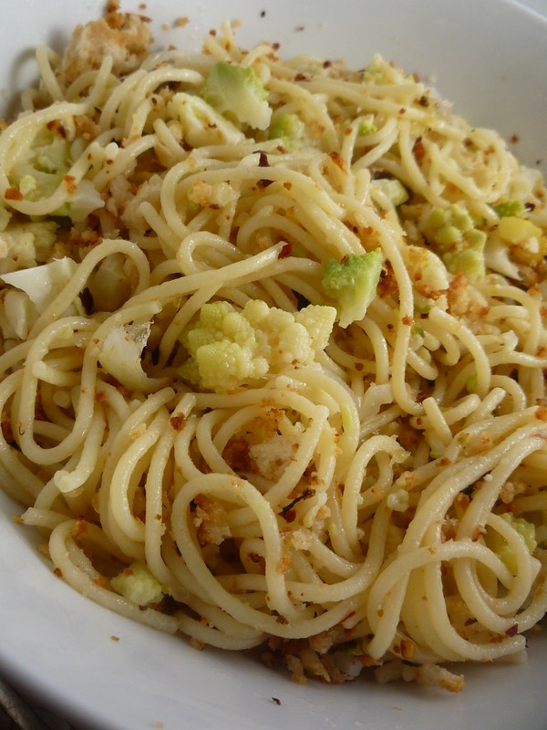

Baked Puttanesca Risotto with Olives, Lemon and Parsley

Time: 10 mins prep, 30 mins to cook
Servings: 4 to 6
Dietary: Vegetarian
Caprese Salad with Slow-Roasted Tomatoes, Rocket and Basil Gremolata

Time: 75 - 105 mins
Servings: 4-6
Dietary: Vegetarian
Crispy Enoki and Onion Fritters with Thai Curry Mayo

Time to Cook: 30 mins
Servings: 4 to 6
Dietary: Vegetarian
Fluffy Steamed Buns filled with Sweet Red Beans

Time to Cook: 11 hours prep, 15 mins cook
Servings: 10 pieces
Dietary: Vegetarian
The Food Lab's Chocolate Chip Cookies

Time to Cook: 45 mins prep, 35 mins to cook
Servings: 28 cookies
Dietary: Vegetarian
Grilled Cheese With Kimchi Recipe

Time to Cook: 12 mins
Servings: 1
Dietary: Vegetarian
Hands-Off Pork and Beans

Time to Cook: overnight prep, 4 hours to cook
Servings: 6 generous servings
Dietary: Meat based
Kimchi Pancake

Time to Cook: 15mins
Servings: 8 slices
Dietary: Vegetarian
Shakshuka (North African style Poached Eggs in Spicy Tomato Sauce)

Time to Cook: 35 mins
Servings: 4 to 6
Dietary: Vegetarian
Spaghetti with Melted Cauliflower Sauce

GO TO RECIPE
Time to Cook: 1 hour and 10 mins
Servings: 4 servings
Dietary: Vegetarian
Sweet, Sour, & Spicy Korean Fried Chicken

Time to Cook: 45-50 minutes
Servings: 3 to 4
Dietary: Meat based
The Ultimate Beef Stroganoff Recipe

Time to Cook: 55 mins
Servings: 4 servings
Dietary: Meat based
Vanilla-Brown Butter Pear Tart

Time to Cook: 3 hours
Servings: 8 servings
Dietary: Vegetarian
Vegetarian Carbonara with Mushrooms, Miso and Parmesan

Time to Cook: 15 mins prep, 15 mins cook
Servings: 4
Dietary: Vegetarian